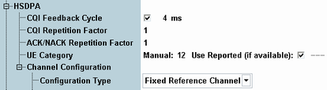

This section describes the first part of the HSDPA section.

The feedback cycle specifies the time after which the UE sends a new CQI value on the HS-DPCCH. The repetition factor defines how often it transmits the same CQI value per feedback cycle. If the feedback cycle parameter is disabled, the UE transmits no CQI values at all.
For a feedback cycle of n*2 ms and a repetition factor of m, a new CQI symbol is transmitted in every n-th subframe. The transmission of the CQI symbol is then repeated in the following m-1 subframes.
Either a new or a repeated CQI value can be sent per HS-DPCCH subframe, so 3GPP requests that feedback cycle ≥ repetition factor * 2 ms. If feedback cycle = repetition factor * 2 ms then all uplink subframes carry CQI symbols so that no DTX periods occur.
See also 3GPP TS 25.214, section 6A.
Option R&S CMW-KS401 required.
Remote command:Specifies the number of transmissions of the same ACK/NACK. The UE repeats the transmission in consecutive HS-DPCCH subframes.
The UE has to ignore the HS-SCCH and HS-DSCH subframes corresponding to HS-DPCCH subframes used for retransmission. This retransmission must be considered when performing BER measurements. Ensure that the inter-TTI distance is greater than or equal to the repetition mode * 2 ms.
See also 3GPP TS 25.214, section 6A.
Option R&S CMW-KS401 required.
Remote command:In signaling mode, the UE category can be set either manually or it can be set automatically according to the UE capability report. In reduced signaling mode, the category must be set manually.
- Manually set value:
If you set the category manually and use a fixed reference channel, the configured category and the selected H-Set must be compatible. For mapping tables refer to 3GPP TS 34.121, section 9 or see "H-Set selection for fixed reference channels".
Consider that the dual carrier operation requires UE category from 21 onwards.
See also "HSDPA UE categories" - "Use Reported (if available)":
If no reported value is available, the manually configured value is used.
If reported values are available, the application displays the used value.
Note that the terms UE category and HS-DSCH category are synonymous in the context of HSDPA.
Option R&S CMW-KS401 required.
Remote command:Selects the configuration type of the high-speed downlink shared channel (HS-DSCH). The HS-DSCH is the downlink transport channel for user data.
Option R&S CMW-KS401 required.
- "Fixed Reference Channel": FRC according to 3GPP TS 25.101, annex A7. Many performance tests for HSDPA use a specific FRC.
For configuration, see "Fixed Reference Channel Configuration". - "CQI": Channel for CQI reporting tests.
For configuration, see "CQI Test Channel Configuration". - "User Defined": Flexible configuration of transport channel parameters by the user.
For configuration, see "User-Defined Channel Configuration".